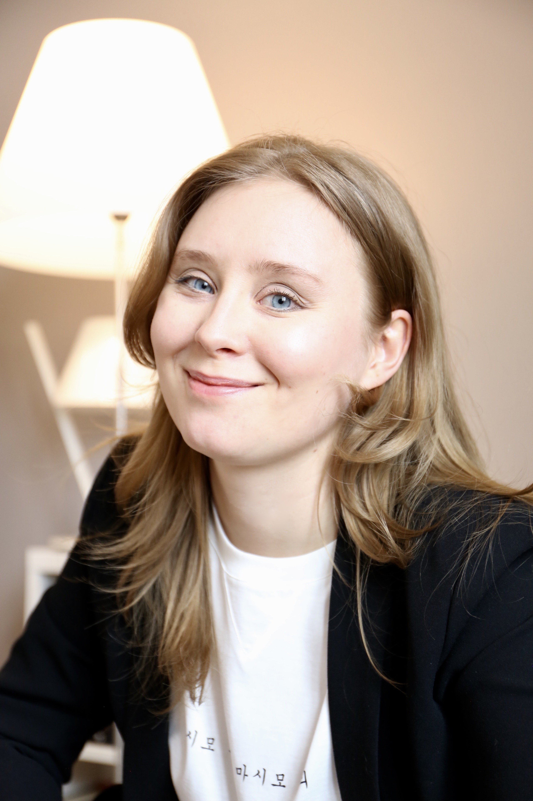

I am a philosopher and historian of science.

I'm currently a PI of the project "Tracking the role of values in Soviet science" at Aleksanteri Institute, University of Helsinki. One of the aims of this research is to determine how past science can inform our normative frameworks regarding the management of social, political, and epistemic values in scientific practice. This research is supported by the Kone foundation.
Alongside my interest in values, I also work on philosophy and history of chemistry and climate science. My previous postdoc concerned the role of values in climate modelling. The project "Values, Choices, and Uncertainties in Climate Modelling" was a collaboration between philosophers at KTH Royal Institute of Technology and climate scientists at Stockholm University.
My PhD research focussed on epistemic values in the development of periodic systems of chemical elements, including the system of the Russian chemist Dmitrii Mendeleev. The results of the research have been published in Philosophy of Science, Ambix, and Centaurus. I earned a PhD in History and Philosophy of Science at the University of Cambridge in 2019/2022.
I am one of the editors and co-founders of Jargonium, blog for history and philosophy of chemistry. I am also an associate editor of Foundations of Chemistry. Aside from the above, I also edit Chemical Intelligence newsletter for Society of History of Alchemy and Chemistry (SHAC).
I help to organise TINT's Perspectives on Science -seminar series at University of Helsinki and run the Joint Commission Online Colloquium in HPS.
Don't hesitate to drop me a line if you have any questions. My email is karoliina.pulkkinen [at] helsinki.fi